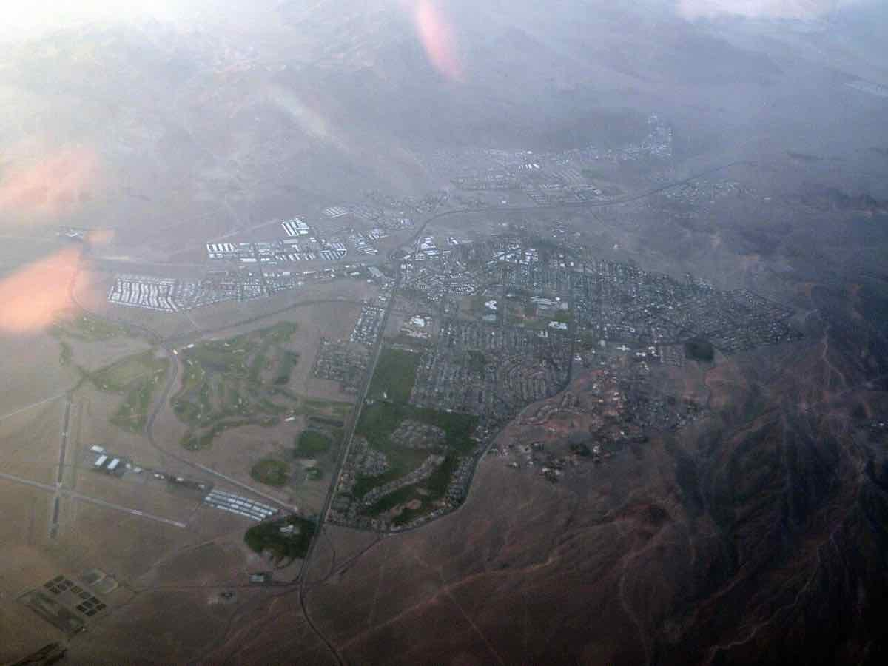

Un judecător din Nevada a respins, a doua oară, acuzațiile penale împotriva celor șase „electori falși” ai lui Trump din 2020
Pe 13 august 2026, judecătoarea Mary Kay Holthus (Clark County, Nevada) a respins pentru a doua oară dosarul penal împotriva celor șase republicani acuzați că au semnat, în decembrie 2020, un certificat fals prin care declarau că Donald Trump a câștigat statul Nevada. Procurorul general Aaron Ford anunță apel la Curtea Supremă a statului.
📰 Cum a titrat fiecare
Aceeași știre, în cuvintele fiecărei publicații. Noi nu le punem etichete de orientare — le punem titlurile alături, iar unghiul fiecăreia se vede singur.
Wikipedia
CNN
Judge dismisses Nevada case against 'fake electors' accused of forging certificate in 2020 election
The Nevada Independent
Clark County judge dismisses case against Nevada 'fake electors' for second time
✅ Se probează
Afirmații susținute de surse verificabile.
Pe 5–6 decembrie 2023, un mare juriu din Nevada i-a inculpat pe Michael J. McDonald (președintele Partidului Republican din Nevada), James DeGraffenreid, Jesse Law (fost președinte al Partidului Republican din Comitatul Clark), James Hindle III, Shawn Meehan și Eileen Rice, fiecare cu câte două capete de acuzare pentru fals — semnarea și depunerea unui certificat electoral fals, prin care se declara că Donald Trump a câștigat cele 6 voturi electorale ale statului Nevada în 2020, deși statul fusese câștigat oficial de Joe Biden.
Este a doua oară când judecătoarea Mary Kay Holthus respinge acest dosar. Prima respingere, din iunie 2024, s-a bazat pe un motiv de jurisdicție teritorială (faptele ar fi avut loc la Carson City și în comitatul Douglas, nu în Clark County). Curtea Supremă a statului Nevada a anulat unanim acea decizie pe 13 noiembrie 2025 și a trimis dosarul înapoi spre judecare la Clark County.
De această dată, judecătoarea Holthus a respins acuzațiile pe fond: a constatat că procurorii nu au adus dovezi suficiente ale intenției de a induce în eroare autoritățile și că statul nu a prezentat marelui juriu probe favorabile inculpaților, aflate deja în posesia anchetatorilor. Potrivit relatărilor, judecătoarea a mai notat că inculpații și-au anunțat public, deschis, acțiunea și scopul ei — element pe care l-a considerat incompatibil cu o intenție de fraudă ascunsă.
Procurorul general al Nevadei, Aaron Ford (democrat), a anunțat intenția de a ataca decizia la Curtea Supremă a statului. Ford a recunoscut public, potrivit relatărilor, că legislația penală a statului „nu abordează direct” tipul de conduită imputată electorilor.
Respingerea din Nevada urmează un tipar similar în alte state care au urmărit penal „electorii falși” din 2020: în Michigan, acuzațiile împotriva celor 15 electori au fost respinse în 2025 pentru lipsa dovezilor privind intenția de fraudă; în Arizona, un judecător a anulat, în mai 2025, inculparea a 18 persoane, decizie confirmată în apel, deși procurorii au anunțat că vor relua ancheta în fața unui nou mare juriu; în Georgia, procesul s-a redus considerabil — doar 3 din cei 16 electori mai sunt urmăriți penal, 8 au acceptat acorduri de imunitate.
⚠️ Contestat / neclar
Puncte unde sursele diferă sau unde informația oficială este incompletă.
Respingerea nu înseamnă că dosarul s-a încheiat definitiv: procurorul general a anunțat apel la Curtea Supremă a statului, instanță care a mai anulat o dată o respingere a judecătoarei Holthus în acest caz (în 2025). Rezultatul apelului nu era cunoscut la data redactării.
Nu există, până la data verificării, o decizie definitivă și general acceptată despre statutul juridic al „electorilor falși” la nivel național — cazul din Wisconsin rămâne deschis, iar în Arizona și Georgia urmărirea penală continuă parțial, sub o formă redusă, în timp ce în Michigan și acum în Nevada (pentru a doua oară) instanțele au respins acuzațiile.
💬 Opinie, nu fapt
Interpretări, etichete și judecăți de valoare — separate explicit de fapte.
🤖 Nota AI
🌍 Am rezumat și pus în context în română o știre din presa americană (CNN, The Nevada Independent, Wikipedia, CREW); sursele originale sunt linkate mai sus — le poți citi oricând, inclusiv cu Google Translate. Ce se probează, concordant: respingerea, a doua oară, a acuzațiilor de fals împotriva celor șase electori republicani din Nevada, motivele invocate de judecătoare (dovezi insuficiente de intenție frauduloasă, nedivulgarea de probe exoneratorii) și anunțul de apel al procurorului general. Am marcat separat, la contestat, faptul că apelul poate răsturna din nou decizia — nu tratăm respingerea drept un verdict final și definitiv asupra cazului.
Noi am turnat apa... concluzia e a ta.
Am pus alături ce se probează cu surse și ce rămâne contestat, neclar sau opinie. Verifică sursele, cântărește dovezile — tragi tu linia între fapt și interpretare.
← Înapoi la prima pagină